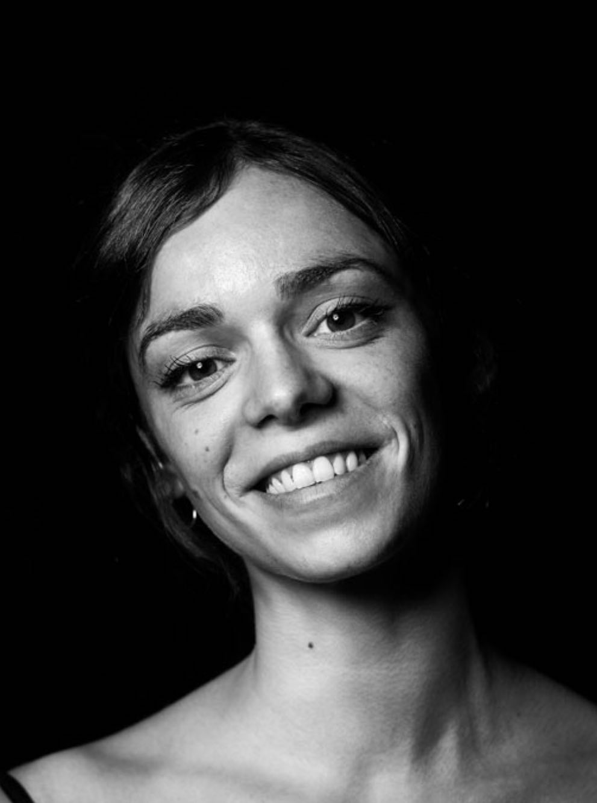

Hi, I'm Pauline!

A little Summary:
I am an ex professional dancer with 10 years of experience,
who then seamlessly transitioned into entrepreneurship.
During my dancing years, I founded a thriving online store specialized in secondhand dancewear,
which brought me a fresh perspective to the intersection of art and business.
Education
Educational schooling:
- Hyper Island Student (Digital Creative 2023-2025)
- Language spezializing in English, Italian, German, Swedish (2015-2023)
- French Baccalauréat specialized in Science (2009-2012, done through distance learning due to simultaneous dance lessons)
- ESM, European School of Munich (2000-2009)
Dance education:
- Diploma from the Hochschule für Musik und Theater München
(Diploma-Ballet-Dancer 2013 equivalent to a Bachelor in performing arts)
Work experience
As a profesionnal Ballet dancer:
- The Royal Swedih Ballet (2019-2023)
- The Finnish National Ballet (2015-2019)
- The Bavararian State Ballet(2013-2015)
- Reached the Top 23 at the Youth American Grand Prix New York finals (2013)
As a Business owner
- Web Designer, Social Media manager and Business Developer for A la Second AB
As a Copywriter:
Skills
Technical skills:
- UX/UI interfacces (Figma)
- Web development (HTML, CSS, JavaScript)
- Graphic design (Photoshop and illustrator)
- Project Management (Hyper Island)
Soft Skills:
- Teamwork and collaboration
- Creativity and innovation
- Communication skills (verbal and written)
- Problem-solving
Language Skills:
- Fluent speaking and writing in English, French and German
- Good speaking level in Italian and Swedish